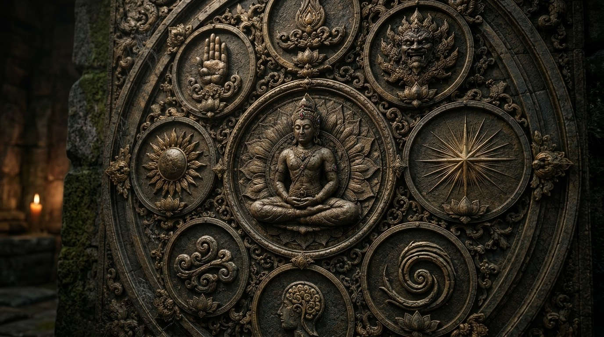

AKSIOMA DASAR FILSAFAT UTTAMOPADESA

Pendahuluan.
Filsafat Uttamopadesa dibangun di atas sejumlah dasar pemahaman yang menjadi landasan bagi seluruh pengembangan pemikiran mengenai hakikat panguripan, keberadaan manusia, sumber kawruh, dan tujuan perjalanan hidup. Dasar-dasar tersebut dirumuskan sebagai aksioma, yaitu ketetapan pemikiran yang menjadi titik tolak dalam memahami hubungan antara Sang Sumber Panguripan, Kasunyatan Hakiki, Kawruh Sejati, dan kehidupan manusia.
Aksioma dasar tidak dimaksudkan sebagai kumpulan pernyataan yang berdiri sendiri, melainkan sebagai satu kesatuan kerangka pemikiran. Setiap konsep mempunyai kedudukan, fungsi, dan hubungan yang saling berkaitan. Pemahaman terhadap satu konsep perlu ditempatkan dalam keseluruhan susunan agar tidak menimbulkan kekeliruan dalam penafsiran.
Delapan aksioma berikut menjadi pedoman untuk menjaga konsistensi pemikiran Uttamopadesa, sekaligus mengarahkan pengembangan kawruh agar tidak berhenti pada pemahaman konseptual, tetapi diwujudkan dalam laku kehidupan manusia.
1. Sang Sumber Panguripan sebagai Asal Mula Seluruh Keberadaan.
Sang Sumber Panguripan merupakan asal mula seluruh keberadaan dan dasar bagi berlangsungnya panguripan. Dalam kerangka filsafat Uttamopadesa, Sang Sumber tidak dipahami sebagai salah satu bagian dari keberadaan, melainkan sebagai sumber yang mendasari segala sesuatu yang ada.
Pemahaman ini menempatkan kehidupan dalam hubungan mendasar dengan asalnya, sehingga manusia tidak memandang keberadaan semata-mata sebagai kenyataan yang berdiri sendiri. Sang Sumber Panguripan menjadi titik awal seluruh bangunan pemikiran Uttamopadesa. Oleh karena itu, setiap pemahaman mengenai hakikat kehidupan, manusia, dan perjalanan hidup perlu ditempatkan dalam kesadaran tentang sumber yang mendasari keberadaan tersebut.
2. Prabhawaning Panguripan sebagai Pemahaman tentang Asal, Daya, dan Tatanan Kehidupan.
Prabhawaning Panguripan merupakan pemahaman mengenai asal, daya, dan tatanan yang memungkinkan panguripan berlangsung. Konsep ini mengarahkan perhatian pada bagaimana kehidupan mempunyai dasar keberadaan, daya yang menopang berlangsungnya, serta tatanan yang mengatur hubungan di dalamnya.
Prabhawaning Panguripan tidak menggantikan kedudukan Sang Sumber Panguripan, melainkan menjadi kerangka untuk memahami pancaran dan berlangsungnya kehidupan dalam hubungannya dengan sumber tersebut. Melalui pemahaman ini, kehidupan tidak dipandang sebagai rangkaian kejadian tanpa keterkaitan, tetapi sebagai keberadaan yang memiliki keteraturan dan hubungan mendasar.
Pemahaman tentang Prabhawaning Panguripan menjadi landasan untuk mengenali Tatananing Panguripan dan menempatkan kehidupan manusia secara selaras di dalamnya.
3. Kasunyatan Hakiki sebagai Kebenaran Sejati yang Mendasari Keberadaan
Kasunyatan Hakiki merupakan kebenaran sejati yang menjadi dasar keberadaan dan tidak bergantung pada pemahaman manusia. Kebenaran tersebut tidak menjadi benar hanya karena diakui, dipercaya, atau diterima oleh seseorang. Sebaliknya, pemahaman manusia harus diarahkan untuk mengenali kebenaran, bukan menjadikan pendapat pribadi sebagai ukuran mutlak.
Dalam filsafat Uttamopadesa, pembedaan antara Kasunyatan Hakiki dan pemahaman manusia sangat penting. Manusia dapat memahami sesuatu secara tepat, tetapi dapat pula keliru karena keterbatasan pandangan, ketidakjernihan cipta, atau kepentingan pribadi. Oleh sebab itu, pencarian kebenaran memerlukan kerendahan hati, kejernihan pemahaman, dan kesediaan menata diri agar pemikiran tidak menyimpang dari hakikat yang hendak dikenali.
4. Jatining Panguripan sebagai Guru Sejati.
Jatining Panguripan merupakan Guru Sejati yang menyampaikan pepadhang Kawruh Sejati kepada manusia. Kedudukan ini menunjukkan bahwa Guru Sejati bukan sekadar sebutan bagi sosok yang memberikan pengetahuan, melainkan berkaitan dengan hakikat terdalam panguripan yang menjadi sumber pepadhang bagi manusia. Kawruh Sejati tidak ditempatkan sebagai hasil ciptaan pikiran semata, sebab pepadhang tersebut menjadi dasar yang menerangi kemampuan manusia dalam mengenali hakikat kehidupan.
Dalam kerangka Uttamopadesa, pemahaman tentang Jatining Panguripan mengarahkan manusia untuk tidak menyamakan Guru Sejati dengan guru lahiriah, tokoh tertentu, atau pengetahuan yang diperoleh dari luar. Pengenalan terhadap kedudukan Guru Sejati menjadi bagian penting dalam memahami sumber pepadhang yang membimbing perjalanan hidup.
5. Kawruh Sejati sebagai Pepadhang dalam Memahami Hakikat Panguripan
Kawruh Sejati merupakan pepadhang yang menerangi manusia dalam memahami hakikat panguripan. Pepadhang ini menjadi dasar bagi kejernihan pengenalan terhadap kebenaran, sehingga manusia dapat membedakan antara kenyataan yang mendasari kehidupan dan penafsiran yang terbentuk dari keterbatasan dirinya.
Kawruh Sejati tidak sama dengan kumpulan informasi, pendapat, atau pengetahuan yang semata-mata diperoleh melalui proses berpikir. Kedudukannya berkaitan dengan pepadhang yang bersumber dari hakikat panguripan dan menjadi pedoman bagi manusia dalam mengenali arah kehidupan.
Melalui Kawruh Sejati, manusia diarahkan untuk menata pemahaman, membersihkan kekeliruan pandangan, serta mengembangkan laku yang selaras dengan kebenaran. Dengan demikian, pepadhang tersebut tidak berhenti sebagai gagasan, tetapi menjadi dasar bagi kehidupan yang lebih utuh.
6. Cipta, Rasa, dan Karsa sebagai Sarana Manusia.
Cipta, rasa, dan karsa merupakan sarana manusia untuk menerima, mengolah, dan menerjemahkan pepadhang Kawruh Sejati ke dalam pemahaman serta tindakan. Cipta berkaitan dengan kemampuan membentuk dan menata pemahaman; rasa berhubungan dengan kepekaan dalam menghayati dan mengenali nilai; sedangkan karsa merupakan daya kehendak yang mengarahkan pilihan serta tindakan. Ketiganya mempunyai fungsi yang berbeda, tetapi perlu bekerja secara selaras.
Cipta yang tidak jernih dapat menghasilkan penilaian keliru, rasa yang tidak tulus dapat dipengaruhi kepentingan pribadi, dan karsa yang tidak tertata dapat mengarahkan manusia pada tindakan yang menyimpang. Karena itu, manusia perlu memurnikan cipta, menuluskan rasa, dan mengutamakan karsa agar pepadhang Kawruh Sejati dapat diterjemahkan secara tepat dalam kehidupan.
7. Kawruh Kasunyatan sebagai Hasil Pemahaman Manusia.
Kawruh Kasunyatan merupakan pemahaman manusia yang lahir dari kejernihan cipta, ketulusan rasa, dan ketepatan karsa serta selaras dengan Tatananing Panguripan. Konsep ini perlu dibedakan dari Kasunyatan Hakiki dan Kawruh Sejati. Kasunyatan Hakiki menunjuk pada kebenaran sejati yang mendasari keberadaan, sedangkan Kawruh Sejati merupakan pepadhang yang menerangi manusia dalam mengenali hakikat tersebut.
Kawruh Kasunyatan adalah pemahaman yang terbentuk ketika manusia mampu mengenali dan menghayati kenyataan secara tepat. Oleh sebab itu, pemahaman manusia tidak otomatis menjadi benar hanya karena dianggap meyakinkan atau diterima oleh banyak orang. Kawruh Kasunyatan perlu diuji melalui keselarasan dengan kebenaran, keteraturan kehidupan, kejernihan pemahaman, dan perwujudannya dalam laku yang bertanggung jawab.
8. Keselarasan Hidup sebagai Tujuan Perjalanan Manusia.
Tujuan perjalanan manusia dalam kerangka Uttamopadesa adalah mencapai keselarasan hidup melalui laku yang diterangi Kawruh Sejati. Keselarasan tersebut tidak hanya berkaitan dengan pengetahuan tentang kebenaran, tetapi juga dengan kemampuan mewujudkannya dalam sikap, keputusan, hubungan antarmanusia, dan tindakan sehari-hari. Manusia tidak cukup hanya memahami ajaran atau menguasai istilah-istilah filosofis apabila pemahamannya tidak tercermin dalam perilaku. Laku menjadi wujud nyata dari pemahaman yang telah dihayati dan diterapkan secara bertanggung jawab.
Melalui laku, manusia menata cipta, rasa, dan karsa agar tidak dikuasai oleh kepentingan pribadi atau penilaian yang keliru. Dengan demikian, perjalanan hidup merupakan proses berkelanjutan untuk menyelaraskan pemahaman, kehendak, dan tindakan dengan pepadhang Kawruh Sejati serta Tatananing Panguripan.
Penutup.
Delapan aksioma dasar tersebut membentuk kerangka pemikiran yang saling berhubungan dalam filsafat Uttamopadesa. Sang Sumber Panguripan menempati kedudukan sebagai asal mula seluruh keberadaan; Prabhawaning Panguripan menjelaskan pemahaman tentang asal, daya, dan tatanan kehidupan; Kasunyatan Hakiki merupakan kebenaran sejati yang mendasari keberadaan; sedangkan Jatining Panguripan berkedudukan sebagai Guru Sejati yang menyampaikan pepadhang Kawruh Sejati.
Pepadhang Kawruh Sejati kemudian menjadi dasar bagi manusia untuk menata cipta, rasa, dan karsa sehingga dapat mengembangkan Kawruh Kasunyatan yang selaras dengan Tatananing Panguripan. Seluruh rangkaian pemahaman tersebut diarahkan pada perwujudan laku kehidupan yang selaras.
Aksioma dasar berfungsi menjaga arah dan keutuhan bangunan filsafat Uttamopadesa. Setiap pengembangan pemikiran, penyusunan pustaka, dan penafsiran baru perlu mempertahankan hubungan serta kedudukan setiap konsep sebagaimana ditetapkan dalam kerangka dasarnya. Pengembangan dapat memperluas uraian dan memperdalam pemahaman, tetapi tidak seharusnya mengaburkan perbedaan antarkonsep atau mengubah hakikat landasannya.
Dengan demikian, aksioma dasar bukan sekadar pengantar untuk mempelajari Uttamopadesa, melainkan pedoman untuk memahami keseluruhan kerangkanya secara konsisten. Pemahaman tersebut memperoleh makna yang utuh ketika diwujudkan dalam laku, sehingga kawruh tidak berhenti sebagai pemikiran, tetapi menjadi tuntunan bagi manusia dalam menjalani kehidupan yang selaras dengan kebenaran dan hakikat panguripan.
FAQ — Pertanyaan Umum tentang Aksioma Dasar Filsafat Uttamopadesa.
1. Apa yang dimaksud dengan aksioma dasar filsafat Uttamopadesa?
Aksioma dasar filsafat Uttamopadesa adalah sejumlah ketetapan pemikiran yang menjadi landasan bagi seluruh pengembangan Kawruh Uttamopadesa. Aksioma ini menetapkan kedudukan Sang Sumber Panguripan, Prabhawaning Panguripan, Kasunyatan Hakiki, Jatining Panguripan, Kawruh Sejati, cipta-rasa-karsa, Kawruh Kasunyatan, serta tujuan perjalanan manusia. Seluruh pengembangan pemikiran Uttamopadesa harus menjaga keselarasan dengan kedelapan dasar tersebut.
2. Mengapa Sang Sumber Panguripan menjadi dasar pertama dalam filsafat Uttamopadesa?
Sang Sumber Panguripan menjadi dasar pertama karena merupakan asal mula seluruh keberadaan. Kedudukan ini menempatkan segala pembahasan mengenai panguripan dan kehidupan manusia dalam hubungan dengan sumber yang mendasarinya. Pemahaman terhadap manusia, kesadaran, kawruh, dan laku kehidupan tidak berdiri sendiri, melainkan menjadi bagian dari kerangka pemikiran yang berawal dari Sang Sumber Panguripan.
3. Apa perbedaan Kasunyatan Hakiki, Kawruh Sejati, dan Kawruh Kasunyatan?
Kasunyatan Hakiki merupakan kebenaran sejati yang mendasari keberadaan dan tidak bergantung pada pemahaman manusia. Kawruh Sejati merupakan pepadhang yang menerangi manusia dalam memahami hakikat panguripan. Sementara itu, Kawruh Kasunyatan merupakan pemahaman manusia yang terbentuk melalui kejernihan cipta, ketulusan rasa, dan ketepatan karsa serta selaras dengan Tatananing Panguripan. Ketiganya saling berkaitan, tetapi mempunyai kedudukan dan pengertian yang berbeda.
4. Apa kedudukan Jatining Panguripan dalam kerangka Uttamopadesa?
Jatining Panguripan berkedudukan sebagai Guru Sejati yang menyampaikan pepadhang Kawruh Sejati kepada manusia. Konsep ini tidak dimaksudkan sebagai sebutan bagi guru lahiriah atau tokoh tertentu. Kedudukannya berkaitan dengan hakikat panguripan yang menjadi sumber pepadhang bagi manusia dalam mengenali kebenaran dan memahami arah kehidupannya. Karena itu, Jatining Panguripan perlu dibedakan dari pengetahuan yang diperoleh melalui pembelajaran lahiriah.
5. Mengapa cipta, rasa, dan karsa menjadi bagian penting dalam aksioma dasar Uttamopadesa?
Cipta, rasa, dan karsa merupakan sarana manusia untuk menerima, mengolah, dan menerjemahkan pepadhang Kawruh Sejati ke dalam pemahaman serta tindakan. Cipta menata pemahaman, rasa menghayati dan mengenali nilai, sedangkan karsa mengarahkan kehendak dan tindakan. Ketiganya perlu diselaraskan agar manusia tidak berhenti pada pengetahuan konseptual, tetapi mampu mewujudkan pemahaman yang benar dalam laku kehidupan.
6. Apakah pengembangan pemikiran Uttamopadesa boleh menghasilkan konsep baru di luar delapan aksioma dasar?
Pengembangan pemikiran Uttamopadesa dapat menghasilkan uraian, penjabaran, dan konsep baru sepanjang tetap selaras dengan delapan aksioma dasar. Pengembangan tersebut tidak boleh mengubah hakikat, kedudukan, dan hubungan mendasar antarkonsep yang telah ditetapkan. Dengan demikian, aksioma dasar berfungsi sebagai pedoman untuk menjaga konsistensi filsafat Uttamopadesa, sekaligus menjadi tolok ukur dalam menyusun pustaka, memperluas penjelasan, dan mengembangkan tuntunan laku kehidupan.